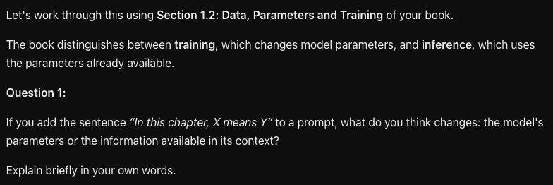

11 November 2026 · EDU Forum · 15:45–17:15 · Hall 210
Who is it for?
Education researchers, teachers, school leaders, doctoral students and policymakers interested in self-directed learning, online and in blended settings.
What will we do?
Use classroom scenarios, learning-path maps and reflective prompts. Examine goals, planning, information organisation, feedback and self-assessment.
What will you take away?
Adaptable strategies and visual scaffolds for autonomy, critical thinking, emotional awareness and digital responsibility.
Self-directed learning is a process in which learners take the initiative to identify learning needs, set goals, choose resources and strategies, and evaluate outcomes.
1. Identify a goal
What do I need to learn, and what do I want to achieve?
2. Choose a path
Which resources, people and strategies will help me learn?
3. Evaluate progress
What have I learned, and what should I change? Self-assessment helps here.
Andrea’s example
“I need to distinguish training from inference. I will use the chapter and a concept map, then check whether I can explain the difference.”
Teachers and peers can support the process; the learner takes responsibility for the choices.
The interface recognises an action; a prompt describes a task.
Formal · interface action
An action offered by the app’s command menu. Select it to invoke the supported behaviour. Available actions depend on the app, account and enabled features.
Informal · prompt label
A label such as /flashcard or /eli5 included in a message. Explain the task and output in ordinary language. The label alone does not establish a built-in command or a guaranteed format.
In the checked ChatGPT web session, none of the 79 catalogue labels appeared in the / menu.
Select an action to inspect its real ChatGPT result or execution status
Menu action
What it does
Study
Open the guided learning action
Model
Open the model selector
Read aloud
Listen to the latest response
Dictate
Convert speech to text
Move to a project
Organise the chat in a project
Custom GPT
Start a chat with a custom GPT
Feedback
Send feedback about the chat
Study · Actual ChatGPT response
Prompt after selecting Study
Using only the attached book, help me understand why adding text to context does not update model parameters. Ask me one short question at a time and wait for my answer. Answer in English.
Let's work through this using Section 1.2: Data, Parameters and Training of your book.
The book distinguishes between training, which changes model parameters, and inference, which uses the parameters already available.
Question 1:
If you add the sentence “In this chapter, X means Y” to a prompt, what do you think changes: the model's parameters or the information available in its context?
Explain briefly in your own words.

Study selected in the native / menu; verbatim response to the uploaded book.
Slide 27 · ChatGPT · informal shortcuts applied to the book
Book §5 · The Transformer decoder
Prompt · informal shortcut
/eli5 Using only §5 of the attached book, explain causal attention to a 15-year-old in no more than 80 words. Explain which tokens a position can use, why future tokens are blocked and what happens after a token is generated. Keep the technical meaning. Answer in English.
Actual ChatGPT response
Causal attention is a mechanism that helps a Transformer language model predict the next token (a piece of text).
Each position can use information from earlier tokens and itself, but not from later positions. A causal mask blocks future tokens so the model cannot use information that should not yet be available.
Once a new token is generated, it is added to the sequence. The model can then use it to predict the next token, repeating the process.
Use it to simplify an explanation while preserving the causal constraint.
Slide 28 · ChatGPT · informal shortcuts applied to the book
Book §§2–7 · A text map with named relationships
Prompt · informal shortcut
/mindmap Using only §§2–7 of the attached book, create a text mind map centred on “Text generation”. Use five branches and label each relationship. Include tokens, decoder blocks, probabilities, generation and training. Distinguish parameter updates from ordinary inference. Answer in English. Keep the complete response within 100 words.
Actual ChatGPT response
TEXT GENERATION
Text generation
1. Tokens — are converted into numerical IDs, then embeddings with positional information.
2. Decoder blocks — transform representations using causal attention, allowing access only to current and earlier positions.
3. Probabilities — are calculated from logits through softmax; temperature changes their concentration.
4. Generation — selects and appends one token, then repeats inference until stopping.
5. Training — updates parameters to reduce prediction error; ordinary inference uses fixed parameters without updating them.
Use it to organise the chapter; explain each link without looking at the map.
Slide 29 · ChatGPT · informal shortcuts applied to the book
Book §§2, 3 and 6 · Recall before checking the answer
Actual ChatGPT output · recorded interaction
Prompt · informal shortcut
/flashcard Using only §§2, 3 and 6 of the attached book, write exactly three question-and-answer flashcards. Test token versus word, context versus parameters, and token probability versus truth. Keep each answer under 30 words. Answer in English. Keep the complete response within 100 words.
Answer the question before revealing the card; compare with the chapter.
Video transcript
1. How is a token different from a word? A token may represent a word, part of a word, punctuation, or spaces. Tokens and words are not equivalent.
2. How do context and model parameters differ? Context supplies information for current inference. Parameters are learned numerical values updated during training, not ordinary inference.
3. Does a token's probability indicate an answer's truth? No. It estimates how likely a token is as the next continuation, not whether the complete answer is true.
Slide 30 · ChatGPT · informal shortcuts applied to the book
Book §6 · Probabilities and temperature
Prompt · informal shortcut
/quiz Using only §6 of the attached book, write three short questions about temperature at fixed logits. Test concentration, ranking and truth. Put a numbered answer key after the questions, with a brief reason for each answer. Answer in English. Keep the complete response within 100 words.
Actual ChatGPT response
Quiz: Temperature at Fixed Logits
1. Concentration: What happens to the probability distribution when temperature increases?
2. Ranking: Does increasing temperature change which token has the highest probability?
3. Truth: Does lowering temperature make the generated answer necessarily more truthful?
Answer key
1. Less concentrated. Higher temperature spreads probability more evenly across alternatives.
2. No. At fixed logits, temperature changes probabilities but preserves their ranking.
3. No. Temperature changes the probability distribution, not the model's knowledge or the truthfulness of its answers.
Use the answer key after an independent attempt; investigate the reason for each error.
Slide 31 · ChatGPT · informal shortcuts applied to the book
Book §§2, 6 and 8 · Find the error and explain the correction
Prompt · informal shortcut
/commonwrong Using only §§2, 6 and 8 of the attached book, show two common misconceptions: uploading a book trains the model, and lowering temperature removes hallucinations. For each, give the wrong claim and a correction with its reason. Answer in English. Keep the complete response within 100 words.
Actual ChatGPT response
1. Uploading a book trains the model
Wrong claim: “Uploading a book updates the model’s parameters.”
Correction: Uploading a book may provide information through context or retrieval. Only training or fine-tuning updates parameters; ordinary inference uses fixed parameters.
2. Lowering temperature removes hallucinations
Wrong claim: “Lower temperature guarantees accurate answers.”
Correction: Lower temperature concentrates probabilities on more likely tokens. It does not verify truth or eliminate hallucinations. Deterministic selection may repeatedly produce the same mistake.
Use it to diagnose a misconception; ask the learner to justify the correction.
Slide 32 · ChatGPT · informal shortcuts applied to the book
Book §§9–10 · Evidence of the learner’s understanding
Prompt · informal shortcut
/rubric Using only §§9–10 of the attached book, create a 6-point formative rubric for Andrea’s assignment. Use three criteria worth 0–2 points each. Give a shared scoring scale and describe the evidence needed for full marks on each criterion. Assess understanding, not just working code. Answer in English. Keep the complete response within 100 words.
Actual ChatGPT response
Formative Rubric — 6 Points
Shared scale: 0 = absent/incorrect; 1 = partial understanding; 2 = complete, independently justified evidence.
Criterion — Full marks (2 points)
1. Conceptual understanding — Independently explain tokenization, probability calculation, sampling, and generation; connect functions to model behavior.
2. Experimental reasoning — Record two controlled experiments, predict outcomes, change one variable, and interpret probability differences versus sampled outputs.
3. Critical evaluation — Identify a code or conceptual error, explain its cause, and demonstrate a test revealing it.
Total: 6 points. Working code alone is insufficient; understanding requires independent explanation, prediction, interpretation, and verification.
Use the rubric for feedback, then ask for an independent explanation of one step.
Anthropic. Official Agent Skills repository. — These implementations target Claude. The four document skills are source-available under their own terms; not every skill in the repository is open source.
Publisher instructions checked · prompts are examples; deliverables have not been generated.
Anthropic. Official Agent Skills repository. — These implementations target Claude. The four document skills are source-available under their own terms; not every skill in the repository is open source.
Record three terms and one uncertain relationship.
Ask and verify
Check one explanation against the chapter.
Reconstruct
Revise the diagram and explain it with the chat closed.
Apply
Use the app, predict a change and compare the outcome.
Checked boxes record activity; the content of the products provides evidence of understanding.
Activity: choose the next support
Slide 49 · Audience · activity 1
Five minutes on the method; no GenAI knowledge required
Read the case · 1 minute
Andrea has twenty subtasks but cannot decide which to start.
Decide in pairs · 2 minutes
Reduce the plan to three actions and add one check of understanding.
Share · 2 minutes
Name your selection criterion and one decision you would leave to Andrea.
A justified support choice that can transfer to another subject.
Notebook: upload the chapter
Slide 50 · Learner · understand
Start the conversation with an identifiable source
Create a notebook
Give it a clear name: “GenAI · chapter and study”.
Add a source
Upload the chapter PDF and check the imported title and content.
Select the material
For this first question, use only the chapter.
Result
A study environment with the assigned material as its reference.
Google. (2026). Use chat in Gemini Notebook. — Select sources and focus the request. A citation does not guarantee correctness. The product also offers agentic features outside this demonstration.
Use an uncertainty from the map as the conversation input
Prompt / excerpt
Use only the chapter. Explain the difference between learned parameters and context during inference. Identify the relevant passage. If the text is insufficient, say so.
The need is to understand why an answer can change without retraining.
A precise request enables a precise source check.
Google. (2026). Use chat in Gemini Notebook. — Select sources and focus the request. A citation does not guarantee correctness. The product also offers agentic features outside this demonstration.
Open the citation and read its context
Slide 52 · Learner · verify
The number beside an answer is the start of checking
Real citation popup. Here the PDF columns are interleaved; check the original PDF or reading HTML.
Open the reference
Select the citation about parameters.
Check the original
Columns are interleaved here. Open the chapter HTML.
Compare the wording
Does “during inference” survive, or become “always”?
Keep the explanation after checking how it relates to the source.
Google. (2026). Use chat in Gemini Notebook. — Select sources and focus the request. A citation does not guarantee correctness. The product also offers agentic features outside this demonstration.
Request a graduated explanation
Slide 53 · Learner · understand
One concept at a time, followed by a question for Andrea
Prompt / excerpt
Explain context in three short steps: definition, example, limitation of the example. Preserve the distinction from parameters. Then ask me one question and wait for my answer.
Result
A segmented explanation to check against the text, followed by the learner’s own attempt.
If the first step remains unclear, investigate it before adding detail.
Google. (2026). Use chat in Gemini Notebook. — Select sources and focus the request. A citation does not guarantee correctness. The product also offers agentic features outside this demonstration.
Check the analogy as well
Slide 54 · Learner · understand
A metaphor helps when its boundary remains visible
Back to the source: during ordinary inference, context enters the calculation and parameters are not updated.
A useful analogy
Context is like material available on a desk during a task.
A boundary to state
The model does not read as a person does; the analogy does not describe its internal calculation.
Andrea should be able to express the concept without the metaphor.
Close the source, attempt an answer, then reopen it to revise
Prompt / excerpt
Ask one question that distinguishes context from training. Do not reveal the answer immediately. After my attempt, identify one correct point and one to revise, with a chapter reference.
Andrea answers before reading a solution, then checks and records a correction.
A generated quiz is useful when it leads to an attempt and revision.
Andrea identifies one correct relationship, one revision and one remaining uncertainty.
Before · teaching example
“Does context train the model again?”
After · expected explanation
“During inference, the calculation input changes without updating parameters”.
The comparison prepares an independent explanation; it does not replace it.
Napkin: start with checked text
Slide 59 · Learner · summarise
Choose the relationships before generating the visual
Generate control in the official guide; the vendor’s example text is unrelated to Andrea.
Prompt / excerpt
Training updates parameters. During inference, the context text becomes a token sequence. The model calculates probabilities for the next token. A selection rule chooses a token and the process repeats.
Paste the text
Use a summary checked against the chapter.
Select and generate
Request a visual for that specific passage.
Napkin proposes a representation; it does not certify the text.
Specify material, behaviour and checks before generating code
Prompt / excerpt
Create an English browser app using a real language model, without a paid API. Use Transformers.js and ONNX Qwen2.5-0.5B-Instruct q4. Show input tokens, five next-token alternatives with probabilities and remaining mass, temperature, and generation up to 24 tokens. Add comparison, reset, loading and error states. Distinguish the explanatory diagram from real data. Explain dependencies, limitations and checks. Use the attached chapter as the conceptual reference.
A reusable teaching request, not the production log of the distributed code.
A complete prompt defines the task; the solution still needs verification.
Anthropic. (2026). Claude pricing. — Free includes Artifacts with usage limits. Does not establish that Claude produced the code distributed in this workshop.
Recorded local inference · Qwen2.5-0.5B-Instruct q4 · English captions and transcript in the kit.
Enter the text
Use a short input and record it.
Read the tokens
Inspect the actual segmentation: tokens do not necessarily match words.
Calculate and generate
Compare alternatives and remaining mass, then generate a single token.
Percentages concern token selection; they do not measure a statement’s truth.
Video transcript
REAL RECORDING — local inference Qwen2.5-0.5B-Instruct q4
00:00:00.000 I load the real model from this computer. No remote API is used.
00:00:04.366 I analyze the starting text. Tokens and probabilities come from the model.
00:00:07.695 I save A, then change only temperature, from 0.8 to 1.5.
00:00:10.206 Probabilities spread out; the most likely token keeps its top rank.
00:00:12.700 Now I change context: France instead of Italy. Temperature returns to 0.8.
00:00:16.153 I sample one token from the full vocabulary. The generated text joins the context.
00:00:19.308 I generate a short continuation. I can stop subsequent steps.
00:00:24.959 I reset the results. The model stays loaded in memory.
00:00:27.394 Real recording. High probability does not mean a true fact.
Explain the symbols, check the source, then make a prediction
Prompt / excerpt
Use the chapter’s softmax-with-temperature formula. Explain each symbol and the denominator in three short steps. Distinguish a score from a probability. Work through scores [2, 1, 0] at T = 1 and show the sum. Then ask me to predict the effect of increasing T, and wait for my answer.
Check the cited passage and the arithmetic; an explanation generated by AI still needs review.
Google. (2026). Use chat in Gemini Notebook. — Select sources and focus the request. A citation does not guarantee correctness. The product also offers agentic features outside this demonstration.
Desmos: make the formula observable
Slide 73 · Learner · explore a formula
Three invented scores for a worked example, separate from the real model
Real Desmos graph · invented scores for the worked example, separate from Qwen measurements.
Open the free calculator
Use the copy-ready expressions in the kit. Here x is temperature T > 0.
Compare fixed scores
Read the three curves at x = 0.5, 1 and 2. Change temperature while keeping scores [2, 1, 0].
Desmos plots and evaluates the entered mathematics; it does not explain the chapter automatically.
Desmos Studio. (2026). Desmos Graphing Calculator User Guide. — Free graphing calculator; no login is needed to use it. An account is needed to save graphs. It evaluates and plots entered expressions; it does not itself provide a source-grounded explanation of the chapter.
Fixed scores [2, 1, 0] · probabilities rounded to four decimals
Before rounding, each distribution sums to 1. Higher T makes these fixed-score probabilities less concentrated.
T = 0.5
p₁ = 0.8668 · p₂ = 0.1173 · p₃ = 0.0159
T = 1
p₁ = 0.6652 · p₂ = 0.2447 · p₃ = 0.0900
T = 2
p₁ = 0.5065 · p₂ = 0.3072 · p₃ = 0.1863
Ask Andrea to explain why the ranking stays the same while concentration changes.
Desmos Studio. (2026). Desmos Graphing Calculator User Guide. — Free graphing calculator; no login is needed to use it. An account is needed to save graphs. It evaluates and plots entered expressions; it does not itself provide a source-grounded explanation of the chapter.
Notebook: study the solution
Slide 75 · Learner · understand the solution
Connect one application function to a chapter concept
Prompt / excerpt
Use the chapter and the solution description. Explain the transition from scores to probabilities in three steps. Identify its connection to the chapter. Then ask me what would change with a higher temperature, without giving the answer.
Add a textual solution description, including version and provenance, alongside the chapter.
Andrea reconstructs the step, returning to the code or source when needed.
Google. (2026). Use chat in Gemini Notebook. — Select sources and focus the request. A citation does not guarantee correctness. The product also offers agentic features outside this demonstration.
An explanation, a prediction and an error correction
Explain
Describe how context contributes to generation.
Predict
Justify the expected effect of changing temperature.
Correct
Refute “The most probable token always provides true information”.
Reflect
Identify one useful support and one remaining uncertainty.
A brief attempt without chat; then reopen materials to revise mistakes.
The teacher designs the evidence
Slide 77 · Teacher · design
The goal, task and criterion must concern the same knowledge
Goal
Understand the roles of context, parameters and token selection.
Evidence
An explanation, commented diagram, justified prediction and correction.
Criteria
Concepts and relationships; process explanation; application and checking.
Assess what the learner can justify, alongside the assisted product.
MagicSchool: draft a rubric
Slide 78 · Teacher · prepare
The teacher provides goals, assignment and constraints
Prompt / excerpt
Prepare a rubric for the attached assignment. Three criteria: concepts and relationships; process explanation; application and checking. Four levels with observable descriptors. Assess GenAI knowledge, without rewarding only polished prose or code. Distinguish the assisted product from the independent explanation.
Open Rubric Generator
Enter goals and assignment, without learner personal data.
Confuses training and inference, or treats probabilities as truth.
2 · Partial
Names concepts, but incompletely relates parameters and context.
3 · Coherent
Distinguishes phases and states correct relationships.
4 · Justified
Justifies relationships and identifies conditions and limits in a new example.
Apply the criterion to meaning in the agreed response mode.
Rubric: process explanation
Slide 81 · Teacher · criteria
Criterion 2 · make the links between stages explicit
1 · Absent
Repeats output without describing the stages.
2 · Fragmentary
Describes some stages but leaves gaps or reversals.
3 · Ordered
Connects input, tokens, processing, distribution and selection.
4 · Justified
Explains the links and separates the diagram from observed data.
A commented diagram or oral explanation can reveal the same process.
Rubric: application and checking
Slide 82 · Teacher · criteria
Criterion 3 · predict, test and revise
1 · Unjustified
States a conclusion without a prediction or check.
2 · Incomplete
Predicts, but changes multiple conditions or does not compare outcomes.
3 · Controlled
Varies one condition, compares the outcome and corrects an error.
4 · Critical
Justifies revision and recognises sampling, limitations and uncertainty.
Do not reward a lucky outcome from one generation.
Prepare questions and expected answers
Slide 83 · Teacher · questions
The first question checks a fundamental distinction
Prompt / excerpt
Generate five chapter-based questions: distinction, explanation, diagram, prediction and transfer. For each, provide the expected answer, a detectable misconception and the rubric criterion. Avoid questions answered by copying a definition.
Q1 · During ordinary inference, what changes when a new prompt is entered? A: original training data. B: calculation context. C: learned parameters.
Expected: B, with justification; a correct choice alone provides limited evidence.
A teacher-reviewed teaching example, not a validated test.
Explanation and diagram completion
Slide 84 · Teacher · questions
Questions 2 and 3 · observe the connections
Q2 · Explain
Why does a token not always match a word? Expected: encoding may split words or represent other sequence elements.
Q3 · Complete a diagram
Complete text → tokens → model → distribution → selection. What repeats? Expected: the selected token joins the context and calculation continues.
Read correctness and explanation without requiring code.
Prediction and transfer
Slide 85 · Teacher · questions
Questions 4 and 5 · apply a concept and recognise an error
Q4 · Predict
Same input and scores: what changes from T = 0.5 to T = 1.2? Expected: less concentrated probabilities, without a guarantee about one sampled token.
Q5 · Correct an error
“The most probable alternative will be true”. Refute using a new example. Expected: token plausibility differs from content truth.
Keep the initial prediction, test outcome and justified revision.
Formative: set up the assessment
Slide 86 · Teacher · collect
One collection point, with clear instructions and available criteria
Official guide screenshot; vendor example data.
Create the activity
State the goal and when materials are allowed or chat must be closed.
Add five questions
Use multiple choice, open response and drawing in the Free plan.
Prepare the review
Key for Q1; teacher review for explanations and diagrams.
Use the standalone kit rubric; no premium integration is needed.
Adapt presentation while checking that meaning is preserved
Prompt / excerpt
Rewrite this paragraph in three short segments. Define token, context and parameters. Preserve the condition “during inference” and flag each simplification. Do not remove essential relationships.
Compare each segment with the original; choose the appropriate detail with the learner.
A brief explanation helps when it preserves the concept’s conditions.
Google. (2026). Use chat in Gemini Notebook. — Select sources and focus the request. A citation does not guarantee correctness. The product also offers agentic features outside this demonstration.
Dictation: express and review an answer
Slide 94 · Learner · express
Speech produces text that the learner must check
Configure Dictation
On Mac: System Settings → Keyboard → Dictation; choose language and activation.
Dictate into the answer field
Explain the role of context.
Read and revise
Check technical terms, negations and punctuation before submitting.
Windows offers voice typing; check availability and settings on the actual device.
Anthropic. (2026). Claude pricing. — Free includes Artifacts with usage limits. Does not establish that Claude produced the code distributed in this workshop.
Desmos Studio. (2026). Desmos Graphing Calculator User Guide. — Free graphing calculator; no login is needed to use it. An account is needed to save graphs. It evaluates and plots entered expressions; it does not itself provide a source-grounded explanation of the chapter.
Anthropic. (2026). Claude pricing. — Free includes Artifacts with usage limits. Does not establish that Claude produced the code distributed in this workshop.
Empirical studies · read the outcome and setting alongside the result
Assisted practice, immediate learning and independent performance are different outcomes.
Bastani et al. · 2025 Bastani, H., Bastani, O., Sungu, A., Ge, H., Kabakcı, Ö., & Mariman, R. (2025). Generative AI without guardrails can harm learning: Evidence from high school mathematics. Proceedings of the National Academy of Sciences, 122(26), e2422633122. Source
Kestin et al. · 2025 Kestin, G., Miller, K., Klales, A., Milbourne, T., & Ponti, G. (2025). AI tutoring outperforms in-class active learning: An RCT introducing a novel research-based design in an authentic educational setting. Scientific Reports, 15, 17458. Source
Two complementary reasons for asking the learner to attempt and revise
These studies inform design choices; they do not validate this complete workshop or a commercial tool.
Huang et al. · 2026 Huang, B., Xie, L., Liu, Y., Liu, X., Tang, H., Feng, X., Qiao, C., Guo, Q., Wu, C., & Bao, L. (2026). From answer machine to collaborative partner: Impact of structured generative AI training on scientific problem solving in STEM education. International Journal of STEM Education, 13, 62. Source
Karpicke & Blunt · 2011 Karpicke, J. D., & Blunt, J. R. (2011). Retrieval practice produces more learning than elaborative studying with concept mapping. Science, 331(6018), 772–775. Source
Frameworks organise design decisions; they are not experimental evidence of tool effectiveness.
Panadero · 2017 Panadero, E. (2017). A review of self-regulated learning: Six models and four directions for research. Frontiers in Psychology, 8, 422. Source
Novak & Cañas · 2008 Novak, J. D., & Cañas, A. J. (2008). The theory underlying concept maps and how to construct and use them. Technical Report IHMC CmapTools 2006-01, Rev. 01-2008. Florida Institute for Human and Machine Cognition. Source
UNESCO · 2024 Miao, F., Shiohira, K., & Lao, N. (2024). AI competency framework for students. UNESCO. Source
Guidance for options, clear content and individual support
Use these references to discuss barriers and supports with the learner.
CAST · UDL 3.0 CAST. (2024). Universal Design for Learning Guidelines, version 3.0. Source
W3C WAI · clear content World Wide Web Consortium. (2021). Making content usable for people with cognitive and learning disabilities: Objective 3, Use clear and understandable content. Source
AID · compensatory tools Associazione Italiana Dislessia. (n.d.). Compensatory tools [English translation of webpage title]. Source
Foundational research behind the chapter’s distinctions
The original Transformer paper describes an encoder–decoder; the demo uses a later causal decoder.
Vaswani et al. · 2017 Vaswani, A., Shazeer, N., Parmar, N., Uszkoreit, J., Jones, L., Gomez, A. N., Kaiser, Ł., & Polosukhin, I. (2017). Attention is all you need. Advances in Neural Information Processing Systems, 30. Source
Ouyang et al. · 2022 Ouyang, L., Wu, J., Jiang, X., Almeida, D., Wainwright, C. L., Mishkin, P., Zhang, C., Agarwal, S., Slama, K., Ray, A., Schulman, J., Hilton, J., Kelton, F., Miller, L., Simens, M., Askell, A., Welinder, P., Christiano, P., Leike, J., & Lowe, R. (2022). Training language models to follow instructions with human feedback. Advances in Neural Information Processing Systems, 35, 27730–27744. Source
Technical bibliography: retrieval and visual explanation
Slide 111 · Bibliography · GenAI
Research references for two different kinds of support
Transformer Explainer is a complementary live resource; its GPT-2 model differs from the workshop’s Qwen demo.
Lewis et al. · 2020 Lewis, P., Perez, E., Piktus, A., Petroni, F., Karpukhin, V., Goyal, N., Küttler, H., Lewis, M., Yih, W.-t., Rocktäschel, T., Riedel, S., & Kiela, D. (2020). Retrieval-augmented generation for knowledge-intensive NLP tasks. Advances in Neural Information Processing Systems, 33, 9459–9474. Source
Cho et al. · CHI 2026 Cho, A., Kim, G. C., Karpekov, A., Lee, S., Helbling, A., Hoover, B., Wang, Z. J., Kahng, M., & Chau, D. H. (2026). Transformer Explainer: Learning LLM Transformers with interactive visual explanation and experimentation. Proceedings of the 2026 CHI Conference on Human Factors in Computing Systems, Article 7, 1–21. Source


![Desmos plots the three softmax probabilities for illustrative scores [2, 1, 0]. The horizontal axis is temperature from 0 to 4; the vertical axis is probability from 0 to 1.](../images/tools/desmos-real.jpg)